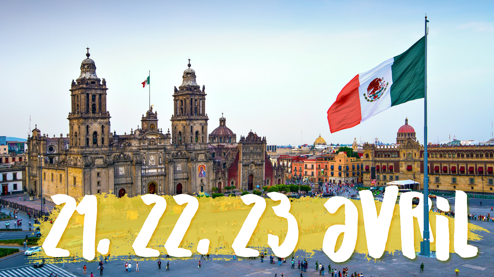
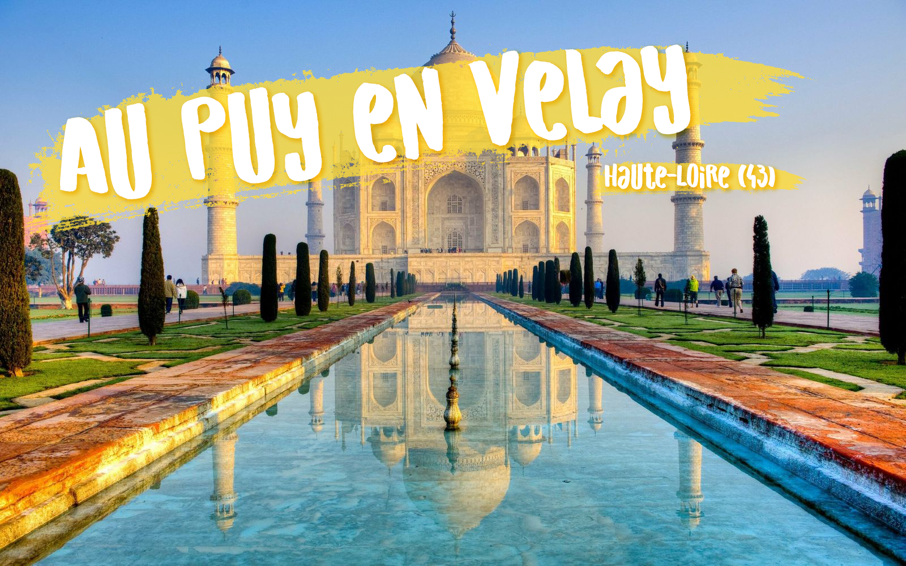
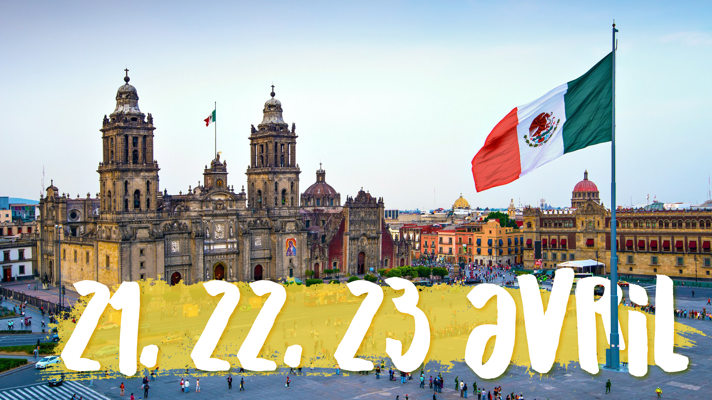
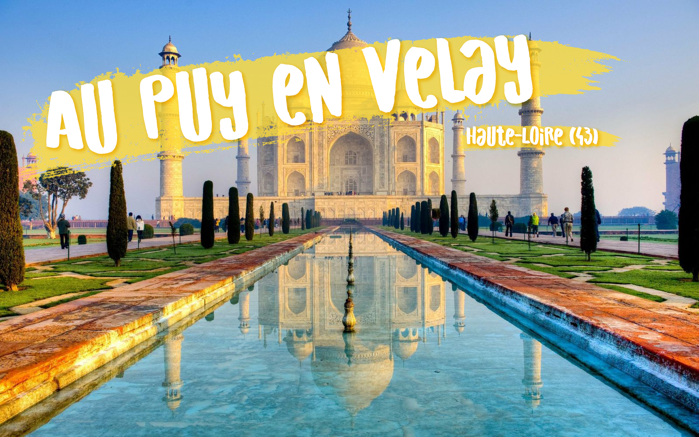
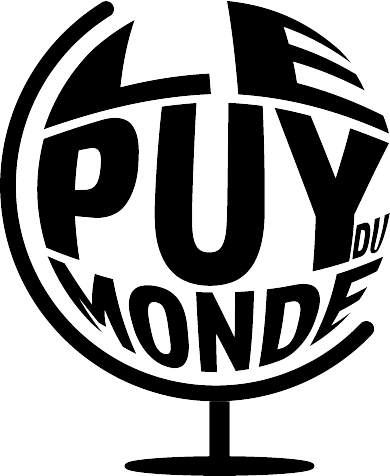
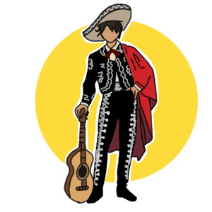
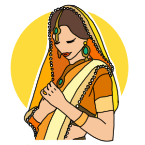
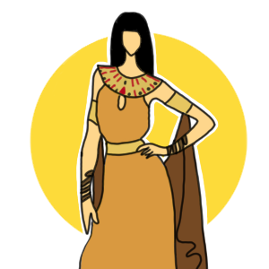
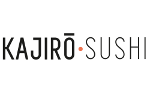

Venez découvrir le nouvel évènement du Puy-En-Velay : Le Puy du Monde du vendredi 21 avril au
dimanche 23 !
Cuisine, Costumes, Musiques, Danses, Défilé, Activités et bien d'autres surprises vous attendent dans toute la ville sur le thème du Japon, Mexique, Inde et Egypte.
Parcourez la ville pour découvrir les quatres pôles des différents pays et découvrir leur culture.
Venez également découvrir un grand concert d'ouverture avec des artistes venant des pays correspondant.
Un grand défilé cloturera cet évènement avec de la danse, de la musique, des costumes et de nombreux artistes.
Cuisine, Costumes, Musiques, Danses, Défilé, Activités et bien d'autres surprises vous attendent dans toute la ville sur le thème du Japon, Mexique, Inde et Egypte.
Parcourez la ville pour découvrir les quatres pôles des différents pays et découvrir leur culture.
Venez également découvrir un grand concert d'ouverture avec des artistes venant des pays correspondant.
Un grand défilé cloturera cet évènement avec de la danse, de la musique, des costumes et de nombreux artistes.
Programme 2023
Vendredi 21 avril
A partir de 20h-01h environ: Concert d'ouverture avec différents artistes venant des pays correspondant.
Au programme : de la danse, de la musique, des spectacles et beaucoup d'amusement !
Samedi 22 avril
9h-12h30 : Apprentissage des spécialités culinaires
des pays sur leurs stands (possibilité de déguster et de partir avec ceux que vous aurez fait)
12h30-14h : Mise en place de restaurants aménagés selon le thème du pays correspondant.
Dégustation de repas traditionnels de chaque pays.
14h-19h : Activité et concours propre à chaque stand de chaque pays. Vous pourrez également
acheter différentes choses typiques de chaque pays comme des costumes, des bibelots et bien d'autres surprises.
19h-01h : Bar, danse, musique ! Une ambiance pour faire la fête et s'amuser !
Dimanche 23 avril
Chaque pays proposera différentes activités tout au long de la journée.
Vous pourrez découvrir pleinement chaque culture, de la cuisine,
de la musique, de la danse, des concours, des activités originales
que vous n'aurez pas souvent l'occasion de faire !
15h30-16h30 : Remise de prix de la vitrine la mieux décorée pour l'occasion !
Vous pourrez voter tout au long de l'évènement pour la vitrine que vous trouvez
la plus jolie.
17h : Grand défilé dans toute la ville, qui cloturera l'évènement. Chaque pays
défilera avec leurs tenues typiques, de la danse, de la musique et quelques spectacles.
Les pays seront réunis pour la fin de cet évènement riche en culture !
Concert
Le Puy du Monde vous propose un grand concert d'ouverture invitant pleins d'artistes du monde entier à vous faire un
spectacle grandiose !
Ses artistes danseront, chanteront, feront différents spectacles pour vous émerveiller.
Chaque pays aura ses propres artistes qui viendront de loin pour vous retrouver et vous faire une prestation qui va vous émerveiller.
Les chants d'Isis en Egypte pour vous emmener dans une musique sacrée et dans de la poésie du pays,
Paulina Rubio ; chanteuse Mexicaine très populaire dans beaucoup de pays,
Aruna Sairam ; chanteuse de padam qui est un chant ancien d'Inde
et Fumie Hihara qui fera de la musique traditionnelle Japonaise. Il y aura beaucoup d'autres artistes pour vous faire vivre pleinement la culture de chaque pays.
Venez vous amuser et faire la fête lors de ce concert d'ouverture !
Pensez à réserver à l'avance pour garantir une place au concert.
Ses artistes danseront, chanteront, feront différents spectacles pour vous émerveiller.
Chaque pays aura ses propres artistes qui viendront de loin pour vous retrouver et vous faire une prestation qui va vous émerveiller.
Les chants d'Isis en Egypte pour vous emmener dans une musique sacrée et dans de la poésie du pays,
Paulina Rubio ; chanteuse Mexicaine très populaire dans beaucoup de pays,
Aruna Sairam ; chanteuse de padam qui est un chant ancien d'Inde
et Fumie Hihara qui fera de la musique traditionnelle Japonaise. Il y aura beaucoup d'autres artistes pour vous faire vivre pleinement la culture de chaque pays.
Venez vous amuser et faire la fête lors de ce concert d'ouverture !
Pensez à réserver à l'avance pour garantir une place au concert.
Japon
Le Japon est un pays insulaire situé dans l'océan Pacifique. Lors de l’évènement Le Puy Du Monde, vous aurez l’occasion de découvrir les spécialités culinaires du Japon mais aussi le kimono qui est le vêtement traditionnel japonais par excellence et ne passe pas de mode. Il y aura également une présentation d’armes typique du Japon Vous pourrez vous exercer au lancer de kunai ou de shuriken ...

Mexique
Situé entre les États-Unis et l'Amérique centrale voici le Mexique ! En ce qui concerne les plats typiques mexicains, on peut évidemment citer le Taco qui est une tortilla de maïs garnie. Les vêtements mexicains ont tous en commun l’appréciation des couleurs vives et du beau travail. Certains objets et œuvres d’arts typiques mexicains seront présentés sur les stands. Des jeux seront organisés ...

Inde
Immense pays du sud de l'Asie La cuisine indienne recouvre une grande variété de cuisines régionales d'Inde. Vous pourrez aussi, venir découvrir les vêtements typiques de l'Inde, mais aussi les porter pour vous immerger pleinement dans la culture du pays. Vous pourrez retrouvez des objets typiques de ce pays comme le Charpoy. Des danseurs seront là pour vous donner l'occasion de danser et de vous amuser de la même manière que les indiens/indiennes ...

Egypte
L'Égypte est un pont entre l'Afrique du Nord-Est et le Moyen-Orient. Venez découvrir de nombreux plats égyptiens qui vous permettront de passer un bon moment en découvrant cette cuisine. Venez découvrir de nombreux plats égyptiens qui vous permettront de passer un bon moment en découvrant cette cuisine. Les tenues traditionnelles seront au Puy du Monde avec des bijoux, des jupons et bien d'autres choses à découvrir Tellement d'objets sont à découvrir comme le parfum, le papyrus et d'autres surprises seront sur les stands Les petits comme les grands, venez vous maquiller comme Cléopâtre et construire des pyramides ...
Lieu
Pour Le Puy Du Monde, nous allons diviser le Puy-en-Velay en 4 pays : Japon, Mexique, Inde et Egypte.
Chacun des pays se verra attribuer une place précise dans la ville, et vous pourrez y découvrir de tout autres cultures.
Le Japon se trouvera au Jardin Henri Vinay.
Le Mexique tiendra place du Marché couvert.
L’Inde sera représentée à la place de la Mairie.
L’Egypte est à découvrir à la place du Breuil.
Pour plus d’informations, n’hésitez pas à regarder les pages du site dédié à chaque pays.
Chacun des pays se verra attribuer une place précise dans la ville, et vous pourrez y découvrir de tout autres cultures.
Le Japon se trouvera au Jardin Henri Vinay.
Le Mexique tiendra place du Marché couvert.
L’Inde sera représentée à la place de la Mairie.
L’Egypte est à découvrir à la place du Breuil.
Pour plus d’informations, n’hésitez pas à regarder les pages du site dédié à chaque pays.
Partenaires
